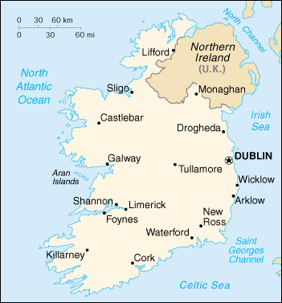

{kind=link}


| Ireland |
|
|  | |
| Introduction |
Background: A failed 1916 Easter Monday Rebellion touched off several years of guerrilla warfare that in 1921 resulted in independence from the UK for the 26 southern counties; the six northern counties (Ulster) remained part of Great Britain. In 1948 Ireland withdrew from the British Commonwealth; it joined the European Community in 1973. Irish governments have sought the peaceful unification of Ireland and have cooperated with Britain against terrorist groups. A peace settlement for Northern Ireland, approved in 1998, has not yet been implemented.
| Geography |
Location: Western Europe, occupying five-sixths of the island of Ireland in the North Atlantic Ocean, west of Great Britain
Geographic coordinates: 53 00 N, 8 00 W
Map references: Europe
Area:
total:
70,280 sq km
land:
68,890 sq km
water:
1,390 sq km
Area - comparative: slightly larger than West Virginia
Land boundaries:
total:
360 km
border countries:
UK 360 km
Coastline: 1,448 km
Maritime claims:
continental shelf:
not specified
exclusive fishing zone:
200 nm
territorial sea:
12 nm
Climate: temperate maritime; modified by North Atlantic Current; mild winters, cool summers; consistently humid; overcast about half the time
Terrain: mostly level to rolling interior plain surrounded by rugged hills and low mountains; sea cliffs on west coast
Elevation extremes:
lowest point:
Atlantic Ocean 0 m
highest point:
Carrauntoohil 1,041 m
Natural resources: zinc, lead, natural gas, barite, copper, gypsum, limestone, dolomite, peat, silver
Land use:
arable land:
13%
permanent crops:
0%
permanent pastures:
68%
forests and woodland:
5%
other:
14% (1993 est.)
Irrigated land: NA sq km
Natural hazards: NA
Environment - current issues: water pollution, especially of lakes, from agricultural runoff
Environment - international agreements:
party to:
Air Pollution, Air Pollution-Nitrogen Oxides, Air Pollution-Sulphur 94, Biodiversity, Climate Change, Desertification, Environmental Modification, Hazardous Wastes, Law of the Sea, Marine Dumping, Nuclear Test Ban, Ozone Layer Protection, Ship Pollution, Tropical Timber 83, Wetlands, Whaling
signed, but not ratified:
Air Pollution-Persistent Organic Pollutants, Climate Change-Kyoto Protocol, Endangered Species, Marine Life Conservation, Tropical Timber 94
Geography - note: strategic location on major air and sea routes between North America and northern Europe; over 40% of the population resides within 97 km of Dublin
| People |
Population: 3,797,257 (July 2000 est.)
Age structure:
0-14 years:
21.85% (male 425,795; female 403,777)
15-64 years:
66.83% (male 1,271,367; female 1,266,150)
65 years and over:
11.33% (male 185,913; female 244,255) (2000 est.)
Population growth rate: 1.16% (2000 est.)
Birth rate: 14.51 births/1,000 population (2000 est.)
Death rate: 8.14 deaths/1,000 population (2000 est.)
Net migration rate: 5.27 migrant(s)/1,000 population (2000 est.)
Sex ratio:
at birth:
1.07 male(s)/female
under 15 years:
1.06 male(s)/female
15-64 years:
1 male(s)/female
65 years and over:
0.76 male(s)/female
total population:
0.98 male(s)/female (2000 est.)
Infant mortality rate: 5.62 deaths/1,000 live births (2000 est.)
Life expectancy at birth:
total population:
76.81 years
male:
74.06 years
female:
79.74 years (2000 est.)
Total fertility rate: 1.91 children born/woman (2000 est.)
Nationality:
noun:
Irishman(men), Irishwoman(women), Irish (collective plural)
adjective:
Irish
Ethnic groups: Celtic, English
Religions: Roman Catholic 91.6%, Church of Ireland 2.5%, other 5.9% (1998)
Languages: English is the language generally used, Irish (Gaelic) spoken mainly in areas located along the western seaboard
Literacy:
definition:
age 15 and over can read and write
total population:
98% (1981 est.)
male:
NA%
female:
NA%
| Government |
Country name:
conventional long form:
none
conventional short form:
Ireland
Data code: EI
Government type: republic
Capital: Dublin
Administrative divisions: 26 counties; Carlow, Cavan, Clare, Cork, Donegal, Dublin, Galway, Kerry, Kildare, Kilkenny, Laois, Leitrim, Limerick, Longford, Louth, Mayo, Meath, Monaghan, Offaly, Roscommon, Sligo, Tipperary, Waterford, Westmeath, Wexford, Wicklow
Independence: 6 December 1921 (from UK by treaty)
National holiday: Saint Patrick's Day, 17 March
Constitution: 29 December 1937; adopted 1 July 1937 by plebiscite
Legal system: based on English common law, substantially modified by indigenous concepts; judicial review of legislative acts in Supreme Court; has not accepted compulsory ICJ jurisdiction
Suffrage: 18 years of age; universal
Executive branch:
chief of state:
President Mary MCALEESE (since 11 November 1997)
head of government:
Prime Minister Bertie AHERN (since 26 June 1997)
cabinet:
Cabinet appointed by the president with previous nomination by the prime minister and approval of the House of Representatives
elections:
president elected by popular vote for a seven-year term; election last held 31 October 1997 (next to be held NA November 2004); prime minister nominated by the House of Representatives and appointed by the president
election results:
Mary MCALEESE elected president; percent of vote - Mary MCALEESE 44.8%, Mary BANOTTI 29.6%
note:
government coalition - Fianna Fail and the Progressive Democrats
Legislative branch:
bicameral Parliament or Oireachtas consists of the Senate or Seanad Eireann (60 seats - 49 elected by the universities and from candidates put forward by five vocational panels, 11 are nominated by the prime minister; members serve five-year terms) and the House of Representatives or Dail Eireann (166 seats; members are elected by popular vote on the basis of proportional representation to serve five-year terms)
elections:
Senate - last held NA August 1997 (next to be held NA 2002); House of Representatives - last held 6 June 1997 (next to be held NA 2002)
election results:
Senate - percent of vote by party - Fianna Fail 29, Fine Gael 16, Labor Party 4, Progressive Democrats 4, others 7; seats by party - NA; House of Representatives - percent of vote by party - NA; seats by party - Fianna Fail 76, Fine Gael 53, Labor Party 19, Progressive Democrats 4, Democratic Left 4, Green Alliance 2, Sinn Fein 1, independents 7
Judicial branch: Supreme Court, judges appointed by the president on the advice of the government (prime minister and cabinet)
Political parties and leaders: Communist Party of Ireland [Michael O'RIORDAN]; Democratic Left [Proinsias DE ROSSA]; Fianna Fail [Bertie AHERN]; Fine Gael [John BRUTON]; Green Alliance [Patricia HOWARD]; Labor Party [Ruairi QUINN]; Progressive Democrats [Mary HARNEY]; Sinn Fein [Gerry ADAMS]; The Workers' Party [Marion DONNELLY]
International organization participation: Australia Group, BIS, CCC, CE, EBRD, ECE, EIB, EMU, ESA, EU, FAO, IAEA, IBRD, ICAO, ICC, ICFTU, ICRM, IDA, IEA, IFAD, IFC, IFRCS, ILO, IMF, IMO, Intelsat, Interpol, IOC, IOM (observer), ISO, ITU, MINURSO, NAM (guest), NEA, NSG, OECD, OPCW, OSCE, UN, UNCTAD, UNESCO, UNFICYP, UNHCR, UNIDO, UNIFIL, UNIKOM, UNITAR, UNMIBH, UNMIK, UNMOP, UNTAET, UNTSO, UPU, WEU (observer), WHO, WIPO, WMO, WTrO, ZC
Diplomatic representation in the US:
chief of mission:
Ambassador Sean O'HUIGINN
chancery:
2234 Massachusetts Avenue NW, Washington, DC 20008
telephone:
[1] (202) 462-3939
FAX:
[1] (202) 232-5993
consulate(s) general:
Boston, Chicago, New York, and San Francisco
Diplomatic representation from the US:
chief of mission:
Ambassador Michael SULLIVAN
embassy:
42 Elgin Road, Ballsbridge, Dublin 4
mailing address:
use embassy street address
telephone:
[353] (1) 668-7122
FAX:
[353] (1) 668-9946
Flag description: three equal vertical bands of green (hoist side), white, and orange; similar to the flag of Cote d'Ivoire, which is shorter and has the colors reversed - orange (hoist side), white, and green; also similar to the flag of Italy, which is shorter and has colors of green (hoist side), white, and red
| Economy |
Economy - overview: Ireland is a small, modern, trade-dependent economy with growth averaging a robust 9% in 1995-99. Agriculture, once the most important sector, is now dwarfed by industry, which accounts for 39% of GDP and about 80% of exports and employs 28% of the labor force. Although exports remain the primary engine for Ireland's robust growth, the economy is also benefiting from a rise in consumer spending and recovery in both construction and business investment. Over the past decade, the Irish government has implemented a series of national economic programs designed to curb inflation, reduce government spending, and promote foreign investment. The unemployment rate has been halved; job creation remains a primary concern of government policy. Recent efforts have concentrated on improving workers' qualifications and the education system. Ireland joined in launching the euro currency system in January 1999 along with 10 other EU nations. The construction and other sectors are beginning to press against capacity, and growth is expected to drop in 2000, perhaps by 1 percentage point.
GDP: purchasing power parity - $73.7 billion (1999 est.)
GDP - real growth rate: 8.4% (1999 est.)
GDP - per capita: purchasing power parity - $20,300 (1999 est.)
GDP - composition by sector:
agriculture:
5%
industry:
39%
services:
56% (1998)
Population below poverty line: 10% (1997 est.)
Household income or consumption by percentage share:
lowest 10%:
2%
highest 10%:
27.3% (1997)
Inflation rate (consumer prices): 2.2% (1999)
Labor force: 1.77 million (1999 est.)
Labor force - by occupation: services 63%, industry 28%, agriculture 9% (1999 est.)
Unemployment rate: 5.5% (1999)
Budget:
revenues:
$25.3 billion
expenditures:
$20.9 billion, including capital expenditures of $2 billion (1999)
Industries: food products, brewing, textiles, clothing; chemicals, pharmaceuticals, machinery, transportation equipment, glass and crystal; software
Industrial production growth rate: 10% (1999 est.)
Electricity - production: 19.715 billion kWh (1998)
Electricity - production by source:
fossil fuel:
94.12%
hydro:
4.63%
nuclear:
0%
other:
1.25% (1998)
Electricity - consumption: 18.415 billion kWh (1998)
Electricity - exports: 100 million kWh (1998)
Electricity - imports: 180 million kWh (1998)
Agriculture - products: turnips, barley, potatoes, sugar beets, wheat; beef, dairy products
Exports: $66 billion (f.o.b., 1999 est.)
Exports - commodities: machinery and equipment, computers, chemicals, pharmaceuticals; live animals, animal products
Exports - partners: EU 68% (UK 22%, Germany 15%, France 8%), US 15% (1998)
Imports: $44 billion (c.i.f., 1999 est.)
Imports - commodities: data processing equipment, other machinery and equipment, chemicals; petroleum and petroleum products, textiles, clothing
Imports - partners: EU 54% (UK 31%, Germany 6%, France 5%), US 16%, Japan 7%, Singapore 4% (1998)
Debt - external: $11 billion (1998)
Economic aid - donor: ODA, $240 million (1999)
Currency: 1 Irish pound = 100 pence
Exchange rates:
Irish pounds per US$1 - 0.9865 (January 2000), 0.9374 (1999), 0.7014 (1998), 0.6588 (1997), 0.6248 (1996), 0.6235 (1995)
note:
on 1 January 1999, the European Union introduced a common currency the euro, which is now being used at a fixed rate of 0.787564 Irish pounds per euro; the euro has replaced the pound in many financial and business transactions; it will replace the local currency in consenting countries for all transactions in 2002
Fiscal year: calendar year
| Communications |
Telephones - main lines in use: 1,642,541 (1999)
Telephones - mobile cellular: 941,775 (1999)
Telephone system:
modern digital system using cable and microwave radio relay
domestic:
microwave radio relay
international:
satellite earth station - 1 Intelsat (Atlantic Ocean)
Radio broadcast stations: AM 9, FM 106, shortwave 0 (1998)
Radios: 2.55 million (1997)
Television broadcast stations: 10 (plus 36 low-power repeaters) (1997)
Televisions: 1.47 million (1997)
Internet Service Providers (ISPs): 14 (1999)
| Transportation |
Railways:
total:
1,947 km
broad gauge:
1,947 km 1.600-m gauge (38 km electrified; 485 km double track) (1998)
Highways:
total:
92,500 km
paved:
87,043 km (including 115 km of expressways)
unpaved:
5,457 km (1999 est.)
Waterways: 700 km (limited for commercial traffic) (1998)
Pipelines: natural gas 225 km (1998)
Ports and harbors: Arklow, Cork, Drogheda, Dublin, Foynes, Galway, Limerick, New Ross, Waterford
Merchant marine:
total:
31 ships (1,000 GRT or over) totaling 100,639 GRT/115,793 DWT
ships by type:
bulk 1, cargo 27, container 2, short-sea passenger 1 (1999 est.)
Airports: 44 (1999 est.)
Airports - with paved runways:
total:
17
over 3,047 m:
1
2,438 to 3,047 m:
1
1,524 to 2,437 m:
3
914 to 1,523 m:
5
under 914 m:
7 (1999 est.)
Airports - with unpaved runways:
total:
27
914 to 1,523 m:
2
under 914 m:
25 (1999 est.)
| Military |
Military branches: Army (includes Naval Service and Air Corps), National Police (Garda Siochana)
Military manpower - military age: 17 years of age
Military manpower - availability:
males age 15-49:
994,040 (2000 est.)
Military manpower - fit for military service:
males age 15-49:
801,975 (2000 est.)
Military manpower - reaching military age annually:
males:
33,303 (2000 est.)
Military expenditures - dollar figure: $732 million (FY98)
Military expenditures - percent of GDP: 0.9% (FY98)
| Transnational Issues |
Disputes - international: Northern Ireland issue with the UK (historic peace agreement signed 10 April 1998); Rockall continental shelf dispute involving Denmark, Iceland, and the UK (Ireland and the UK have signed a boundary agreement in the Rockall area)
Illicit drugs: transshipment point for and consumer of hashish from North Africa to the UK and Netherlands and of European-produced synthetic drugs; minor transshipment point for heroin and cocaine destined for Western Europe